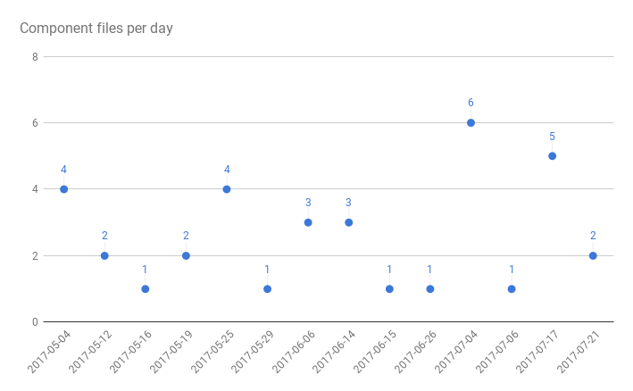

Fancy React
React Super Powers in Atom
Eddie Sholl @eddiesholl
Peeling the Javascript Onion
Browser time!
Your Babel
React
Atom
My babel and eslint
Generated Javascript snippets
My plugin code

Cry just like a regular onion
The Atom experience
No context switching
Active and mature
Please come and hack me!
Modular
Precise
Flexible
Files
Verbose
Standards
